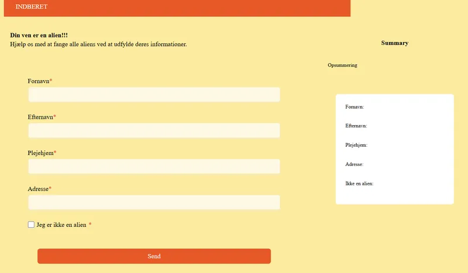

T4 Grundlæggende Brugergrænsefladeudvikling
Emergency site
I dette tema fokuserede vi på infografik, formular og darkmode. I dette opgave lærte jeg at lave responsive formular og popup vinduer, som blev forbedret med transitioner med Javascript. Vi lærte at tilføje darkmode til sider for at forbedre brugervenlighed og tilgænglighed.
Infografik
Ved brug af adobe illustrator udarbejdede jeg en responsiv infografik, som passede til mit tema. Desværre kunne jeg ikke få hotspots til at virke.
Hvad har jeg lært?
Jeg har lært at skifte farver fra lightmode til darkmode og lave formular.